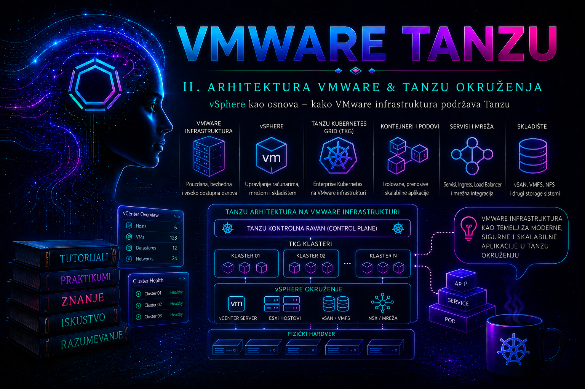

VMware & Tanzu

VMware Tanzu radna opterećenja ne izvršavaju se izvan infrastrukture na kojoj su postavljena. Kada se Kubernetes koristi kroz vSphere Supervisor, VMware vSphere Kubernetes Service ili druge Tanzu modele povezane sa vSphere okruženjem, pouzdanost platforme zavisi od istih infrastrukturnih slojeva od kojih zavise i tradicionalne virtuelne mašine: ESXi hostova, vCenter Server sistema, klastera, procesorskih i memorijskih resursa, mreža, skladišta, DNS-a, NTP-a, sertifikata i administrativnih prava.
vSphere zato nije samo mesto na kojem se pokreće nekoliko Kubernetes virtuelnih mašina. On predstavlja infrastrukturnu kontrolnu ravan koja obezbeđuje raspoređivanje, dostupnost, izolaciju i životni ciklus resursa potrebnih Supervisor-u i njegovim workload klasterima. Administrator koji razume Tanzu, ali ne razume vSphere, može prepoznati da pod nije dostupan, ali neće pouzdano utvrditi da li je uzrok Kubernetes konfiguracija, nedostatak procesorske rezerve, datastore latencija, neispravan VMkernel put, problem distribuiranog switch-a ili kvar ESXi hosta.
Napomena o izdanjima i terminologiji. U vSphere 8 dokumentaciji često se sreću nazivi vSphere with Tanzu, Workload Management, Supervisor, vSphere Namespace i Tanzu Kubernetes Grid Service. U novijim VMware Cloud Foundation 9.x izdanjima naglasak je na vSphere Supervisor platformi i VMware vSphere Kubernetes Service, odnosno VKS klasterima. Administratorski princip ostaje isti, ali se naziv ekrana, podržana mrežna topologija, način licenciranja, dostupne usluge i deklarativni API objekti mogu razlikovati. Pre svake implementacije potrebno je proveriti dokumentaciju tačno instaliranog vCenter, ESXi, Supervisor i VCF izdanja, kao i Broadcom Compatibility Guide.
Kompatibilnost se dokazuje matricom, a ne nazivom proizvoda
Izraz „vSphere 8” nije dovoljno precizan za odluku o podršci. Produkciona konfiguracija je podržana tek kada se uklope konkretan vCenter build, ESXi build, verzija Supervisor-a, VKS odnosno ugrađenog Supervisor servisa, ciljno Kubernetes izdanje, mrežni model, load balancer, NSX izdanje ako se koristi, storage/CSI mogućnosti, server, procesor, I/O kontroleri, NIC adapteri, firmware i upravljački drajveri. Zato se compatibility provera vodi kao matrica sa dokazima i datumom, a ne kao jedna stavka „verzija je 8.0”.
| Sloj | Primarni dokaz | Šta se upoređuje | Tipična pogrešna pretpostavka |
|---|---|---|---|
| vCenter, ESXi i Supervisor | Product Interoperability Matrix, release notes i upgrade pre-check | Tačan update, patch i build; podržani redosled i međukoraci nadogradnje | Da svaki Supervisor koji radi na starom vCenter-u može neposredno da prati bilo koji noviji vCenter. |
| Supervisor i VKS/Kubernetes | Supervisor i VKS release notes i compatibility tabela konkretnog izdanja | Dostupna servisna verzija, podržana Kubernetes izdanja i upgrade putanja | Da izbor verzije u UI-u znači da je dozvoljen preskok svih međuverzija. |
| Server, CPU, NIC, HBA i storage | Broadcom Compatibility Guide i vendor firmware matrica | Model servera, CPU generacija, device/driver/firmware kombinacija i ESXi izdanje | Da podržan server automatski znači da je podržana svaka kartica i svaki firmware u njemu. |
| VCF bill of materials | VCF BOM, release notes i Lifecycle Management pre-check | Propisana kombinacija vCenter-a, ESXi-ja, NSX-a i ostalih VCF komponenti | Da se komponenta u VCF okruženju sme samostalno patch-ovati samo zato što njen samostalni proizvod podržava taj patch. |
Važna upgrade posledica. Kompatibilnost je dvosmerna i vremenski zavisna. Noviji vCenter može zahtevati minimalnu verziju Supervisor-a, dok određena Supervisor ili VKS verzija može biti dostupna tek od određenog vCenter patch-a. Upgrade pre-check koji blokira postupak predstavlja zaštitnu kontrolu. Ne zaobilazi se uklanjanjem ili ručnom izmenom upravljanih objekata, već se utvrđuje podržani međukorak, radi file-based backup VCSA sistema, proverava povratna putanja i Supervisor se nadograđuje redosledom koji propisuju release notes.
Verzije, licence i entitlement
Licenca nije isto što i tehnička kompatibilnost. Sistem može biti tehnički sposoban da prikaže Workload Management ekran, a da organizacija nema odgovarajući entitlement za produkcionu upotrebu, podršku ili potrebne klasterske funkcije. Obrnuto, posedovanje licence ne čini nepodržan hardver ili neusklađen build podržanim. Administrator zato odvojeno potvrđuje: pravo korišćenja proizvoda, dodelu licence vCenter/solution instanci, stanje pretplate i podrške, pravo na potrebne vSphere, Supervisor, VKS, NSX/Avi ili druge komponente i tehničku kompatibilnost cele kombinacije.
U vSphere 8 porodici način dodele licence zavisi od tačnog update-a i kupljenog paketa; od vSphere 8.0 Update 2b dokumentacija obuhvata i solution licensing za određene pakete. U vSphere/VCF 9 modelu komponente povezane sa licenciranom vCenter instancom mogu se licencirati automatski kroz solution licencu. Zbog promena komercijalnih paketa ne treba u trajni runbook upisivati pretpostavku tipa „potrebna je tačno edicija X”. Merodavni su ugovor organizacije, Broadcom portal i licensing dokumentacija konkretnog build-a. Pre aktiviranja administrator čuva dokaz o entitlement-u, ali u operativni zapis ne stavlja licencne ključeve.
Obavezni i projektni preduslovi
Minimalni brojevi hostova, fizičkih NIC-ova, memorije po hostu, režim DRS-a i podržani load balancer razlikuju se prema tome da li se implementira single-cluster ili zonal Supervisor i da li se koristi VDS ili NSX mrežni model. Na primer, zvanični zahtevi za pojedine vSphere 8 VDS topologije dopuštaju Partially Automated ili Fully Automated DRS, dok određene NSX topologije zahtevaju Fully Automated DRS. Zbog toga se zahtev nikada ne generalizuje iz drugog deployment modela.
- Obavezni tehnički preduslov prepisuje se iz vodiča za izabranu topologiju: broj klastera i hostova, HA/DRS stanje i režim, mrežni switch, load balancer, fizički uplink-ovi, shared storage, DNS/NTP i potrebni portovi.
- Produkcioni projektni kriterijum može biti stroži: N+1 ili N+2 kapacitet, odvojeni failure domain-i, rezervni uplink-ovi, interni prag datastore prostora, RPO/RTO i bezbednosna segmentacija.
- Laboratorijsko odstupanje mora biti jasno označeno kao nepogodno za produkciju. Uspešan demo sa minimalnim resursima ne dokazuje dostupnost, performanse ni podržanost produkcionog dizajna.
vSphere infrastrukturni sloj
Osnovu vSphere okruženja čine ESXi hipervizori kojima centralizovano upravlja vCenter Server. ESXi direktno koristi fizičke procesore, memoriju, mrežne adaptere i uređaje za skladištenje i pretvara ih u kontrolisane resurse dostupne virtuelnim mašinama. Tanzu komponente koriste te iste resurse, ali ih vSphere izlaže kroz dodatne apstrakcije: klastere, resource pool objekte, distribuirane port grupe, storage politike, VM klase, namespace kvote i Supervisor servise.
vCenter Server održava inventar, konfiguraciju klastera, autorizaciju, alarme, zadatke, događaje i integraciju sa drugim servisima. U Supervisor okruženju on koordinira aktiviranje platforme, postavljanje kontrolnih komponenti, povezivanje sa mrežnim i skladišnim resursima i prikaz stanja Workload Management sistema. Gubitak vCenter upravljačke ravni ne mora trenutno zaustaviti već pokrenute virtuelne mašine ili sve postojeće Kubernetes workload-e, ali onemogućava ili ograničava administrativne operacije, promene željenog stanja i deo automatizovanog životnog ciklusa. Zbog toga dostupnost vCenter Server Appliance sistema, njegova datoteka konfiguracionog backupa i pouzdan DNS nisu pomoćni, već produkcioni zahtevi.
ESXi hostovi namenjeni Supervisor-u grupišu se u vSphere klaster. Klaster predstavlja administrativnu i resursnu granicu nad kojom rade vSphere Distributed Resource Scheduler, High Availability i druge funkcije. Hostovi unutar klastera moraju biti usklađeni po verzijama, podržanom hardveru, mrežnoj konfiguraciji, pristupu datastore resursima i vremenu. Heterogenost nije uvek zabranjena, ali svako odstupanje povećava mogućnost da se Tanzu komponenta može pokrenuti na jednom hostu, a ne može bezbedno premestiti ili ponovo pokrenuti na drugom.
Compute resursi, DRS i High Availability
Supervisor kontrolne komponente i čvorovi workload klastera predstavljeni su vSphere-u kao upravljani infrastrukturni objekti. Njihove potrebe za CPU-om i memorijom ne smeju se planirati samo prema zbiru deklarisanih veličina virtuelnih mašina. Potrebni su kapacitet za rast, prostor za HA restart nakon gubitka hosta, resursi za nadogradnju tokom koje stare i nove komponente mogu privremeno postojati istovremeno i rezerva za sistemske procese ESXi hostova.
DRS prati raspoložive resurse i preporučuje ili automatski sprovodi migracije virtuelnih mašina između hostova. U potpuno automatizovanom režimu može koristiti vMotion da održi uravnoteženje i poštuje pravila afiniteta. To nije zamena za kapacitet. Ako je klaster fizički preopterećen, DRS samo preraspoređuje nedostatak. Visoke vrednosti CPU Ready, trajno ballooning ili swapping memorije i veliki broj DRS preporuka simptomi su problema kapaciteta ili nepravilno dimenzionisanih workload-a.
vSphere HA nadzire hostove i, kada potvrdi njihov kvar, pokušava da ponovo pokrene zaštićene virtuelne mašine na preostalim hostovima. HA ne čuva izvršavanje procesa bez prekida; on skraćuje oporavak ponovnim pokretanjem. Kubernetes zatim na svom nivou obnavlja podove i usklađuje deklarisano stanje. Ova dva mehanizma nisu konkurentna: vSphere oporavlja infrastrukturne čvorove, dok Kubernetes oporavlja aplikativne resurse. Međutim, oba mehanizma zavise od raspoloživog kapaciteta, mreže i skladišta.
Admission Control treba podesiti tako da klaster može podneti definisani broj kvarova hostova. Isključivanje Admission Control-a radi privremenog povećanja iskorišćenosti uklanja zaštitnu granicu i može dovesti do toga da HA nema gde da pokrene Supervisor ili workload čvorove. Svaka promena HA i DRS politike zato zahteva procenu efekta na Tanzu, dokumentovanu promenu i proveru nakon implementacije.
Mrežna podrška za Supervisor i workload klastere
vSphere mreža povezuje ESXi upravljačke interfejse, vMotion, skladišni saobraćaj, Supervisor kontrolnu ravan, čvorove workload klastera, Kubernetes servise, ingress komponente, DNS, NTP, registre kontejnerskih image-a i korisničke radne stanice. Jedna zelena ikona port grupe ne potvrđuje da je čitav komunikacioni put funkcionalan.
Produkcioni Supervisor se uobičajeno oslanja na vSphere Distributed Switch ili na mrežnu integraciju definisanu podržanom VCF arhitekturom. Konkretan model može koristiti vSphere networking sa odgovarajućim load balancer rešenjem ili NSX mrežu. Izbor nije kozmetički: određuje rutiranje, raspodelu IP adresa, mreže za servise, način objavljivanja aplikacija, bezbednosne kontrole i postupke dijagnostike.
Pre aktiviranja Supervisor-a administrator mora proveriti VLAN-ove, MTU, uplink redundantnost, teaming politiku, rutiranje, firewall pravila, raspoložive IP opsege i odsustvo preklapanja između mreža. Forward i reverse DNS zapisi treba da budu dosledni, a NTP izvori dostupni svim relevantnim komponentama. Razlika u vremenu može izazvati TLS greške, probleme autentikacije i neuspešan životni ciklus klastera koji se pogrešno tumači kao mrežni kvar.
VMkernel adapteri imaju specifične uloge. Management, vMotion, vSAN, NFS ili iSCSI saobraćaj ne treba nekontrolisano mešati na istoj mreži. Administrator proverava ne samo da li adapter postoji već i da li koristi očekivani TCP/IP stack, VLAN, MTU i fizičke uplink putanje. Kod većih MTU vrednosti test mora koristiti paket koji ne dozvoljava fragmentaciju; običan ping može proći iako jumbo putanja nije ispravna.
Storage i vSphere Storage Policy
Tanzu koristi skladište za diskove kontrolnih i radnih čvorova, persistent volume zahteve aplikacija i pomoćne platformne komponente. Datastore zato mora imati dovoljan kapacitet, performanse i redundantnost, ali dostupnost datastore-a sama po sebi nije dovoljna. Kubernetes potrošač najčešće bira storage klasu, dok vSphere mapira taj zahtev na vSphere Storage Policy i odgovarajući datastore.
Storage politika opisuje zahteve kao što su tip skladišta, redundantnost, performansne karakteristike ili druge mogućnosti koje pruža konkretan storage sistem. Politika mora biti kompatibilna sa datastore resursima i dodeljena odgovarajućem vSphere Namespace-u. Pogrešna ili nekompatibilna politika može ostaviti PersistentVolumeClaim u stanju Pending iako na jednom datastore-u postoji mnogo slobodnog prostora.
Administrator treba da razlikuje kapacitet od performansi. Visoka latencija, zagušenje kontrolera ili nedostupna putanja mogu izazvati sporo kreiranje čvorova, timeout greške, produženo priključivanje volumena i nestabilnost aplikacija. Za deljena blok skladišta proveravaju se multipathing i stanje putanja; za NFS dostupnost mreže i servera; za vSAN zdravlje klastera, usklađenost objekata i prostor potreban za resynchronization. Storage DRS, datastore alarmi i storage vendor alati dopunjuju, ali ne zamenjuju proveru iz perspektive workload-a.
vSphere Namespaces, kvote i izolacija
vSphere Namespace predstavlja granicu kroz koju infrastrukturni administrator objavljuje resurse timovima. U namespace-u se dodeljuju korisnici i grupe, dozvoljene VM klase, storage politike i resursna ograničenja. Time se ne zamenjuje Kubernetes RBAC unutar workload klastera. vSphere dozvole regulišu pristup infrastrukturnoj usluzi, dok Kubernetes RBAC reguliše operacije nad Kubernetes API resursima.
Kvote sprečavaju da jedan tim nekontrolisano zauzme zajednički klaster, ali suviše niska kvota može blokirati nadogradnju ili horizontalno skaliranje. Potrebno je obuhvatiti trenutno opterećenje, očekivani rast i privremeni kapacitet za rolling operacije. Administrator ne treba da rešava svaki zahtev povećanjem kvote. Najpre se proverava da li aplikacija ima opravdane requests i limits vrednosti, da li postoje napušteni klasteri i volumeni i da li je tražena VM klasa primerena nameni.
Izolacija namespace-a nije potpuna mrežna izolacija sama po sebi. Potrebne su odgovarajuće mrežne politike, firewall pravila, identitetske kontrole i odvojene zone kada poslovni rizik to zahteva. Kritična i razvojna opterećenja ne treba smeštati u isti failure domain bez eksplicitno prihvaćenog rizika.
Granice odgovornosti vSphere administratora
vSphere administrator odgovara za zdravlje fizičke i virtuelne infrastrukture, kapacitet, dostupnost hostova, vCenter, mreže, skladište, verzijsku kompatibilnost i infrastrukturna prava. Kubernetes administrator odgovara za stanje klastera, node pool objekte, verzije Kubernetes komponenti, CNI i CSI integraciju u okviru podržanog modela. Aplikativni tim odgovara za image, manifest, requests i limits, readiness i liveness probe, podatke i ponašanje aplikacije.
Granice nisu izgovor za prebacivanje incidenta. Kada pod ostane Pending, infrastrukturni administrator proverava kvote, VM klase, kapacitet i storage politiku; Kubernetes administrator proverava scheduler događaje i stanje čvorova; aplikativni tim proverava zahteve manifesta. Eskalacija je opravdana kada je problem reprodukovan, vreme događaja precizno zabeleženo, dostupni logovi sačuvani i potvrđeno da konfiguracija odgovara podržanoj arhitekturi.
Integrisani praktikum: procena spremnosti vSphere klastera za Supervisor
Poslovni i tehnički kontekst. Organizacija želi da na postojećem vSphere 8 klasteru omogući Supervisor i kasnije kreira VKS odnosno podržane Tanzu workload klastere. Pre aktiviranja platforme infrastrukturni tim mora dokazati da klaster ima redundantne hostove, uključen HA i DRS, zajedničko skladište, distribuiranu mrežu, usklađene VMkernel adaptere, ispravan DNS i dovoljno kapaciteta. Praktikum ne aktivira Supervisor, jer su mrežni parametri, licence i ekran za aktiviranje zavisni od izdanja; njegov rezultat je proverljiva odluka da li je klaster spreman za kontrolisanu implementaciju.
Referentno okruženje. vCenter Server je vcsa01.lab.tashizza.local, datacentar DC-BG01, klaster CLS-TANZU-01, ESXi hostovi esx01.lab.tashizza.local, esx02.lab.tashizza.local i esx03.lab.tashizza.local, distribuirani switch VDS-TANZU-01, management port grupa DVPG-MGMT-110, vMotion port grupa DVPG-VMOTION-120, workload port grupa DVPG-WORKLOAD-210 i deljeni datastore DS-VSAN-TANZU-01. Administratorska Linux stanica je admin01.lab.tashizza.local.
Preduslovi i prava. PowerShell 7 i podržana verzija VMware PowerCLI modula instalirani su na administratorskoj stanici. Nalog TASHIZZA\svc-tanzu-audit ima read-only pristup relevantnom vCenter inventaru, uključujući hostove, mreže, datastore objekte, alarme i konfiguraciju klastera. Za eventualnu promenu HA ili DRS koristi se poseban privilegovani nalog kroz odobrenu promenu; audit nalog se ne koristi za modifikacije. PowerCLI sertifikaciona politika mora verovati internoj sertifikacionoj organizaciji. Zaobilazak TLS provere nije prihvatljiva produkciona praksa.
Rizik i početno stanje. Vežba je projektovana kao read-only procena i ne aktivira Workload Management, ne menja licence, HA/DRS, vDS, VMkernel adaptere niti Lifecycle Manager image. Pre početka u change zapisu se navode datum procene, ciljni deployment model, ciljni vCenter/Supervisor/VKS build-ovi i vlasnici compute, network, storage, DNS/NTP, PKI i licensing provera. Time se sprečava da tehnički „zelen” klaster bude odobren bez potvrde zavisnosti koje PowerCLI ne vidi.
-
Napraviti compatibility i licensing radni list. Iz vSphere Client-a zabeležiti vCenter build, ESXi build svakog hosta, verziju vDS-a, stanje cluster image compliance-a i dodeljene solution licence. Zatim u Broadcom Product Interoperability Matrix i Compatibility Guide proveriti ciljni vCenter/Supervisor/VKS odnos, server modele, CPU serije, NIC/HBA uređaje, drajvere i firmware. Za VCF okruženje uporediti stanje sa BOM-om ciljnog VCF izdanja. Licencne ključeve maskirati; u dokaz uneti samo proizvod, kapacitet/rok, dodelu i status.
Očekivani rezultat i validacija. Svaki red radnog lista mora imati trenutno stanje, ciljno stanje, izvor, datum provere, rezultat
PASS,FAILiliEXCEPTIONi vlasnika korekcije. Nepoznat firmware ili neproverena VKS putanja nijePASS. Formalni izuzetak ne menja vendor support status i mora sadržati poslovno prihvatanje rizika. -
Pripremiti direktorijum i uspostaviti proverenu sesiju. Direktorijum čuva izveštaj i dokaz sprovedene kontrole. Lozinka se ne upisuje u skriptu, već PowerCLI interaktivno traži akreditive.
mkdir -p "$HOME/tanzu-readiness" cd "$HOME/tanzu-readiness" pwsh
Validacija: Komanda mora prikazati povezani vCenter, njegovu verziju i korisnički identitet. Greška o nevažećem sertifikatu rešava se instaliranjem odgovarajućeg CA lanca, a ne trajnim isključivanjem provere.Import-Module VMware.PowerCLI Connect-VIServer -Server vcsa01.lab.tashizza.local$global:DefaultVIServers | Select-Object Name,Version,Build,User -
Potvrditi identitet klastera i broj povezanih hostova. Supervisor ne treba planirati nad klasterom koji nema očekivani inventar ili čiji su hostovi u stanju Disconnected, NotResponding ili Maintenance.
Validacija: Očekuju se tri hosta, stanje$cluster = Get-Cluster -Name "CLS-TANZU-01" -ErrorAction Stop $hosts = Get-VMHost -Location $cluster | Sort-Object Name $hosts | Select-Object Name,ConnectionState,PowerState,Version,Build, @{N="CpuUsagePct";E={[math]::Round(100*$_.CpuUsageMhz/$_.CpuTotalMhz,1)}}, @{N="MemoryUsagePct";E={[math]::Round(100*$_.MemoryUsageGB/$_.MemoryTotalGB,1)}}ConnectediPoweredOn, kao i usklađena podržana izdanja. Host u maintenance režimu nije automatski kvar, ali njegov kapacitet ne sme biti uračunat u HA rezervu. -
Proveriti HA, DRS i kapacitet klastera. Očitavaju se efektivne klasterske postavke i zbirni resursi. Prag od 70% u ovom primeru nije univerzalno pravilo, već operativna granica organizacije koja ostavlja prostor za kvar jednog hosta i kratkotrajni rast.
Validacija: HA, Admission Control i DRS treba da budu uključeni, a DRS režim usklađen sa usvojenom politikom. Ako zbirna potrošnja prelazi prag, analiza se nastavlja na nivou hostova, resource pool objekata i istorijskih metrika; trenutni uzorak nije dovoljan za odluku o kapacitetu.$cluster | Select-Object Name,HAEnabled,HAAdmissionControlEnabled, DrsEnabled,DrsAutomationLevel $summary = [pscustomobject]@{ Cluster = $cluster.Name HostCount = $hosts.Count CpuTotalGHz = [math]::Round((($hosts | Measure-Object CpuTotalMhz -Sum).Sum / 1000),1) CpuUsagePct = [math]::Round(100*(($hosts | Measure-Object CpuUsageMhz -Sum).Sum / ($hosts | Measure-Object CpuTotalMhz -Sum).Sum),1) MemoryTotalGB = [math]::Round(($hosts | Measure-Object MemoryTotalGB -Sum).Sum,1) MemoryUsagePct = [math]::Round(100*(($hosts | Measure-Object MemoryUsageGB -Sum).Sum / ($hosts | Measure-Object MemoryTotalGB -Sum).Sum),1) } $summary | Format-List -
Proveriti deljeno skladište i kompatibilnost politike. Svi hostovi moraju videti datastore predviđen za platformu. Slobodan prostor se prikazuje i proverava se održavanje datastore-a.
Validacija: Datastore mora biti dostupan sa sva tri hosta i u stanju$ds = Get-Datastore -Name "DS-VSAN-TANZU-01" -ErrorAction Stop $ds | Select-Object Name,Type,State,CapacityGB,FreeSpaceGB, @{N="FreePct";E={[math]::Round(100*$_.FreeSpaceGB/$_.CapacityGB,1)}} foreach ($h in $hosts) { $visible = Get-Datastore -VMHost $h -Name "DS-VSAN-TANZU-01" -ErrorAction SilentlyContinue [pscustomobject]@{ Host = $h.Name DatastoreVisible = [bool]$visible State = if ($visible) {$visible.State} else {"MISSING"} } }Available. Za vSAN se dodatno proveravaju Skyline Health, resynchronization i usklađenost objekata. Najmanje 30% slobodnog prostora je lokalni kriterijum ovog scenarija, a ne zamena za vendor sizing. -
Proveriti distribuirani switch i port grupe. Ovim se potvrđuje da objekti postoje i da su hostovi članovi očekivanog switch-a.
Validacija: Sva tri hosta moraju biti priključena na$vds = Get-VDSwitch -Name "VDS-TANZU-01" -ErrorAction Stop $vds | Select-Object Name,Version,Mtu,NumUplinkPorts Get-VDPortgroup -VDSwitch $vds | Where-Object Name -in @( "DVPG-MGMT-110", "DVPG-VMOTION-120", "DVPG-WORKLOAD-210" ) | Select-Object Name,VlanConfiguration,NumPorts Get-VMHost -Location $cluster | ForEach-Object { $hostName = $_.Name Get-VDSwitch -VMHost $_ -Name "VDS-TANZU-01" -ErrorAction SilentlyContinue | Select-Object @{N="Host";E={$hostName}},Name,Mtu }VDS-TANZU-01, a potrebne port grupe moraju postojati sa očekivanim VLAN konfiguracijama. PowerCLI prikaz potvrđuje vCenter konfiguraciju, ali fizički switch trunk i firewall putanje proveravaju mrežni administratori. -
Proveriti VMkernel adaptere i vMotion servis. Neusklađen VLAN ili MTU često se otkrije tek pri migraciji ili većem paketu.
Validacija: Svaki host mora imati management adapter i najmanje jedan adapter sa uključenim vMotion servisom, u očekivanim mrežama i sa doslednim MTU vrednostima. Potpuna validacija jumbo putanje izvodi se sa ESXi Shell-a samo kroz odobrenu dijagnostičku sesiju:$hosts | ForEach-Object { Get-VMHostNetworkAdapter -VMHost $_ -VMKernel | Select-Object @{N="Host";E={$_.VMHost.Name}},Name,IP,SubnetMask, Mtu,ManagementTrafficEnabled,VMotionEnabled } | Sort-Object Host,Name
Rezultat bez gubitka potvrđuje putanju za MTU 9000 kada su svi međuslojevi tako konfigurisani. Ako standardni ping prolazi, a ovaj test ne, problem je najverovatnije MTU nedoslednost, a ne DNS.vmkping -I vmk1 -d -s 8972 <VMOTION_IP_DRUGOG_HOSTA> -
Proveriti DNS i NTP zavisnosti. Test se izvodi sa administratorske stanice prema svakom infrastrukturnom FQDN-u, dok se stanje NTP servisa očitava na hostovima.
Validacija: Svi nazivi moraju vraćati očekivane adrese, NTP servis mora biti pokrenut sa odgovarajućom politikom, a hostovi moraju koristiti odobrene izvore vremena. Reverse lookup se posebno proverava komandom$names = @( "vcsa01.lab.tashizza.local", "esx01.lab.tashizza.local", "esx02.lab.tashizza.local", "esx03.lab.tashizza.local" ) foreach ($name in $names) { Resolve-DnsName $name -Type A } Get-VMHostService -VMHost $hosts | Where-Object Key -eq "ntpd" | Select-Object VMHost,Key,Running,Policy Get-VMHostNtpServer -VMHost $hosts | Select-Object VMHost,NtpServerResolve-DnsName <IP_ADRESA> -Type PTR. -
Pregledati aktivne alarme i nedavne događaje. Zelena trenutna metrika ne poništava ponavljajuće probleme u događajima.
Validacija: Ne sme biti nerešenih događaja koji ukazuju na gubitak redundanse, datastore nedostupnost, host isolation, pad uplink-a ili česte neuspešne migracije. Alarm se ne resetuje bez uklanjanja uzroka i dokumentovanog dokaza oporavka.Get-AlarmDefinition | Where-Object {$_.Enabled -eq $true} | Select-Object Name,Description Get-VIEvent -Entity $cluster -Start (Get-Date).AddHours(-24) -MaxSamples 500 | Where-Object {$_.GetType().Name -match "Alarm|Host|Datastore|Network"} | Select-Object CreatedTime,UserName,FullFormattedMessage | Sort-Object CreatedTime -Descending -
Izvesti dokaz procene. Rezultati se čuvaju u CSV datotekama pogodnim za prilog change zahtevu.
Validacija: Datoteke moraju imati zaglavlja, po jedan očekivani zapis za svaki objekat i vreme nastanka evidentirano u change dokumentaciji.$hosts | Select-Object Name,ConnectionState,PowerState,Version,Build, CpuTotalMhz,CpuUsageMhz,MemoryTotalGB,MemoryUsageGB | Export-Csv "./CLS-TANZU-01-hosts.csv" -NoTypeInformation Get-Datastore -VMHost $hosts | Select-Object Name,Type,State,CapacityGB,FreeSpaceGB | Sort-Object Name -Unique | Export-Csv "./CLS-TANZU-01-datastores.csv" -NoTypeInformation Get-VMHostNetworkAdapter -VMHost $hosts -VMKernel | Select-Object @{N="Host";E={$_.VMHost.Name}},Name,IP,SubnetMask,Mtu, ManagementTrafficEnabled,VMotionEnabled | Export-Csv "./CLS-TANZU-01-vmkernel.csv" -NoTypeInformation -
Izvršiti negativni test bez izmene produkcije. Namerno se traži nepostojeća port grupa kako bi se proverilo da skripta ne proglašava nedostajući resurs spremnim.
Očekivani rezultat: Ispis mora biti$missing = Get-VDPortgroup -Name "DVPG-WORKLOAD-999" -ErrorAction SilentlyContinue if (-not $missing) { Write-Output "PASS: nedostajuci obavezni objekat je pravilno otkriven." } else { Write-Output "FAIL: neocekivani objekat postoji; proveriti naming i VLAN." }PASS. U stvarnoj readiness skripti isti obrazac treba da vrati neuspešan izlazni kod kada nedostaje obavezna mreža, datastore ili host. -
Završiti sesiju i zaštititi izveštaje. PowerCLI sesija se eksplicitno zatvara. Izveštaji mogu sadržati interne nazive i IP adrese i zato se ne objavljuju u javnom repozitorijumu.
Disconnect-VIServer -Server vcsa01.lab.tashizza.local -Confirm:$false exit
Validacija: PowerCLI više ne prikazuje aktivan vCenter uchmod 600 "$HOME/tanzu-readiness/"*.csvDefaultVIServers, a dozvole CSV datoteka dozvoljavaju pristup samo vlasniku.
Rollback i cleanup. Osnovni praktikum je read-only i ne zahteva rollback. CSV datoteke se uklanjaju tek nakon što su prenete u odobreni sistem evidencije i istekao je propisani period čuvanja. Ako je tokom odvojene, odobrene promene uključen HA ili DRS, povratak na prethodno stanje nije automatski bezbedan postupak: najpre se procenjuje uticaj na Supervisor i workload klastere, zatim se vraćaju dokumentovane prethodne vrednosti kroz vSphere Client ili podržani PowerCLI cmdlet.
Relevantni logovi. Za vCenter operacije i Workload Management probleme prikuplja se vCenter support bundle i namenski Workload Management log bundle kroz podržane vSphere postupke. Na VCSA sistemu su posebno značajni /var/log/vmware/vpxd/ za vCenter upravljačke operacije i odgovarajući Workload Control Plane logovi u /var/log/vmware/wcp/. Na ESXi hostu /var/log/hostd.log prati lokalne upravljačke operacije, /var/log/vpxa.log komunikaciju sa vCenter-om, /var/log/vmkernel.log kernel, storage i mrežne događaje, a /var/log/vobd.log sistemske opservacije i alarme. Direktno menjanje Supervisor kontrolnih virtuelnih mašina, njihovog virtuelnog hardvera ili sistemskih datoteka nije podržan način popravke; takve promene mogu biti izgubljene tokom repair ili upgrade operacije.
Kriterijumi prihvatanja. Procena je uspešna kada su sva tri hosta povezana i podržana, HA i DRS aktivni prema usvojenoj politici, klaster ima dokumentovan kapacitet za kvar jednog hosta, datastore je dostupan sa svih hostova i iznad internog praga slobodnog prostora, distribuirani switch i port grupe postoje, VMkernel uloge i MTU su dosledni, DNS i NTP testovi prolaze, nema kritičnih nerešenih infrastrukturnih alarma, a izveštaji su priloženi change zahtevu. Neispunjen kriterijum znači NOT READY, a ne „spremno uz praćenje”, osim kada je izuzetak formalno procenjen i odobren.
Tipične greške i njihovo razlikovanje
Dijagnostika počinje dokazima, ne promenom stanja: vremenski se korelišu poslednja promena, task/event zapis, aktivni alarmi, vCenter i ESXi logovi i rezultat istog testa sa svakog failure domain-a. Tek zatim se formira hipoteza i bira najmanje invazivna korekcija.
| Simptom i posledica | Neposredni i osnovni uzrok | Dokaz i bezbedna privremena mera | Trajna korekcija i potvrda |
|---|---|---|---|
| Supervisor pre-check ili upgrade je blokiran. | Nepodudaran vCenter/Supervisor/VKS build ili preskočen obavezni međukorak; osnovni uzrok je nepotpuna upgrade matrica. | Sačuvati pre-check i support bundle; ne brisati upravljane VM objekte. Odložiti promenu. | Primeniti podržani redosled i potrebne međuv verzije; ponoviti pre-check i potvrditi zdravo stanje pre sledećeg koraka. |
| Host je Connected, ali workload se ne može bezbedno premestiti ili restartovati. | Različit CPU feature set, image/driver/firmware, mreža ili datastore vidljivost; osnovni uzrok je nedosledan failure domain. | Isključiti host iz readiness kapaciteta i sprečiti novo raspoređivanje kroz odobrenu operativnu meru. | Uskladiti cluster image, firmware i konfiguraciju; potvrditi compliance, vMotion i HA scenario. |
| Licensing alarm ili nedostupna funkcija iako su binarne komponente instalirane. | Nedodeljena/istekla solution licenca ili pogrešan entitlement; osnovni uzrok je pretpostavka da instalacija dokazuje pravo korišćenja. | Ne unositi nasumičan ključ i ne premeštati licence bez odobrenja; sačuvati stanje dodele. | Licensing tim potvrđuje ugovor i pravilno dodeljuje licencu; alarm nestaje, a potreban feature je dostupan. |
- Nedovoljan kapacitet maskiran DRS-om. Česte migracije i visoka potrošnja na svim hostovima ukazuju na nedostatak resursa; problem jednog neuravnoteženog hosta ima drugačiji obrazac i DRS ga može uspešno ispraviti.
- Slobodan datastore, ali neuspešan PVC. Proveravaju se storage klasa, namespace dodela, kompatibilnost vSphere Storage Policy i CSI događaji. Slobodan prostor na datastore-u ne potvrđuje da je politika primenljiva.
- Ping prolazi, deployment ne uspeva. Proveravaju se TCP portovi, rutiranje između svih relevantnih mreža, MTU bez fragmentacije, load balancer konfiguracija i DNS. ICMP test potvrđuje samo deo putanje.
- Host je Connected, ali nije ravnopravan član klastera. Porede se build, image compliance, firmware, uplink konfiguracija, datastore vidljivost i VMkernel servisi.
- Ručno popravljanje Supervisor kontrolne VM. Promena CPU-a, memorije, NIC-a ili datoteka može narušiti deklarisano stanje i nije podržan trajni lek. Koriste se podržane reconfiguration, repair ili redeployment procedure prema tačnoj verziji.
- Preširoka prava servisnog naloga. Readiness provera ne zahteva Administrator rolu. Posebni audit i change identiteti smanjuju posledice kompromitacije i poboljšavaju trag revizije.
Administratorske prakse
| Praksa | Provera i učestalost | Prag i prva reakcija | Dokaz uspeha |
|---|---|---|---|
| Kapacitet klastera | vCenter performance grafikoni, Aria Operations ili odobreni monitoring; dnevni pregled i obavezno pre dodavanja node pool-a ili nadogradnje. | Reakcija kada projektovani kvar hosta ostavlja nedovoljno CPU-a ili memorije, kada CPU Ready trajno raste ili se pojavljuje swapping. Zaustavlja se novo provisionovanje i radi capacity analiza. | Trendovi, proračun N+1 kapaciteta i odluka beleže se u CMDB-u i capacity izveštaju; uspeh je najmanje jedan simulirani failure scenario bez prekoračenja usvojenih pragova. |
| Zdravlje hostova i image compliance | vSphere Lifecycle Manager, hardware health i alarmi; najmanje nedeljno i posle patch ili firmware promene. | Non-compliant host, degradiran uređaj ili nepodržana kombinacija zahteva uklanjanje hosta iz raspoloživog kapaciteta i planiranu sanaciju. | Lifecycle Manager prikazuje compliant stanje, a change zapis sadrži build, firmware, rezultat pre-check-a i post-check-a. |
| Mrežna redundantnost | Stanje fizičkih uplink-ova, vDS port grupa, LACP ili teaming politika i mrežni alarmi; dnevno automatizovano, ručno nakon svake switch promene. | Gubitak redundantnog uplink-a ili MTU nedoslednost zahteva zamrzavanje mrežnih promena, proveru fizičkog porta i kontrolisani test putanje. | Oba redundantna puta su aktivna, vmkping test prolazi očekivanom veličinom, a mrežna konfiguracija je evidentirana u CMDB-u. |
| Storage zdravlje | Kapacitet, latencija, path stanje, vSAN health i resynchronization; kontinuirani alarmi i dnevni pregled. | Slobodan prostor ispod internog praga, trajna latencija iznad storage SLO-a, izgubljena putanja ili vSAN objekti koji nisu compliant zahtevaju ograničenje novih workload-a i uključivanje storage tima. | Svi hostovi vide datastore, storage politika je compliant, nema kritičnih health alarma, a testni PVC može biti kreiran, montiran, zapisan, pročitan i obrisan. |
| DNS, NTP i sertifikati | Automatizovani forward/reverse lookup, vremenski offset i rok sertifikata; dnevno, kao i pre upgrade-a. | Nedosledan zapis, nedostupan NTP ili sertifikat pred istekom u definisanom operativnom prozoru pokreće sanaciju pre platformne promene. | Obostrano razrešavanje imena, vremenski offset u dozvoljenom opsegu i obnovljen sertifikat sa kompletnim lancem dokumentuju se u PKI i change evidenciji. |
| Backup vCenter Server Appliance sistema | VCSA file-based backup konfiguracije i inventarnih podataka na odvojeno SFTP, FTPS, HTTPS ili drugo podržano odredište; najmanje dnevno prema RPO-u. | Neuspešan posao, nepodudaran checksum ili backup stariji od RPO-a zahteva ponavljanje posla i proveru kapaciteta, pristupa i mreže odredišta. | Periodični probni restore u izolovanom okruženju mora podići VCSA, omogućiti prijavu i prikazati očekivani inventar. Sam status „Completed” bez restore testa nije dovoljan dokaz. |
| Audit privilegija | Pregled SSO grupa, vCenter rola i servisnih naloga; kvartalno i nakon promene zaposlenja ili odgovornosti. | Nepoznat član privilegovane grupe, interaktivna upotreba servisnog naloga ili pravo veće od poslovne potrebe zahteva ograničenje pristupa i bezbednosnu proveru. | Odobrena matrica prava, vlasnik svakog naloga i datum sledeće revizije čuvaju se u IAM evidenciji; uspeh je odsustvo neodobrenih trajnih privilegija. |
Završna kontrolna tačka
- ☐ Administrator ume da napravi verzijsku matricu sa tačnim build-ovima i da razlikuje Product Interoperability Matrix, Hardware Compatibility Guide, VCF BOM i release notes.
- ☐ Dokumentovano je da licensing/entitlement provera i tehnička compatibility provera predstavljaju dva odvojena kriterijuma.
- ☐ Komanda
Get-VMHost -Location CLS-TANZU-01prikazuje tri hosta u stanjuConnectediPoweredOn. - ☐ Klaster prikazuje uključene HA, Admission Control i DRS funkcije sa dokumentovanom automation politikom.
- ☐ Capacity izveštaj potvrđuje da preostala dva hosta mogu prihvatiti zaštićena opterećenja nakon gubitka jednog hosta.
- ☐
DS-VSAN-TANZU-01je dostupan sa svakog hosta, nema kritičan health alarm i ima najmanje 30% slobodnog prostora prema internom kriterijumu scenarija. - ☐ Sva tri hosta su povezana na
VDS-TANZU-01, a tri referentne port grupe imaju odobrene VLAN konfiguracije. - ☐ Management i vMotion VMkernel adapteri imaju očekivane IP mreže, uloge i MTU, a test bez fragmentacije prolazi kada se koristi jumbo MTU.
- ☐ Forward i reverse DNS zapisi vraćaju odobrene adrese, a NTP servis radi prema standardnom izvoru vremena.
- ☐ Pregled događaja za poslednja 24 sata ne pokazuje nerešen host isolation, uplink, datastore ili migracioni problem.
- ☐ CSV readiness izveštaji su priloženi change zahtevu i zaštićeni od neovlašćenog pristupa.
- ☐ Postoji uspešan, dokumentovan probni restore VCSA backupa u okviru organizacionog RPO i RTO zahteva.
Zaključak
vSphere podržava Tanzu tako što Kubernetes platformi pruža kontrolisane failure domain-e, procesorske i memorijske resurse, HA restart, DRS raspoređivanje, mrežnu povezanost, storage politike, identitet i centralizovani životni ciklus. Njegova vrednost nije samo u izvršavanju virtuelnih mašina, već u doslednom prevođenju fizičke infrastrukture u automatizovane resurse koje Supervisor i workload klasteri mogu bezbedno koristiti.
Nakon ove lekcije administrator treba da ume da proceni klaster pre aktiviranja Supervisor-a, proveri hostove, HA, DRS, kapacitet, datastore, vDS, VMkernel uloge, DNS, NTP i alarme, kao i da sačuva dokaz sprovedene kontrole. Takođe mora razlikovati Kubernetes simptom od infrastrukturnog uzroka: Pending pod može biti posledica kvote, VM klase, storage politike ili nedostatka kapaciteta; mrežni timeout može poticati od MTU-a, rutiranja, firewall-a, DNS-a ili load balancer-a; HA restart ne može uspeti bez slobodnih fizičkih resursa.
Bezbedna promena počinje proverom kompatibilnosti i postojećeg stanja, sprovodi se uz najmanja potrebna prava i završava funkcionalnim post-check testom. Direktna modifikacija upravljanih Supervisor komponenti, zaobilaženje TLS provere, ignorisanje Admission Control-a i proglašavanje sistema spremnim samo zato što nema crvenih alarma predstavljaju produkcione rizike. Kada problem uključuje nepodržanu hardversko-softversku kombinaciju, ponavljajući kvar kontrolne ravni, gubitak podataka, oštećenje vCenter baze ili potrebu za intervencijom unutar upravljanih Supervisor virtuelnih mašina, administrator čuva logove, zaustavlja improvizovane izmene i eskalira slučaj odgovarajućem VMware by Broadcom ili infrastrukturnom timu.